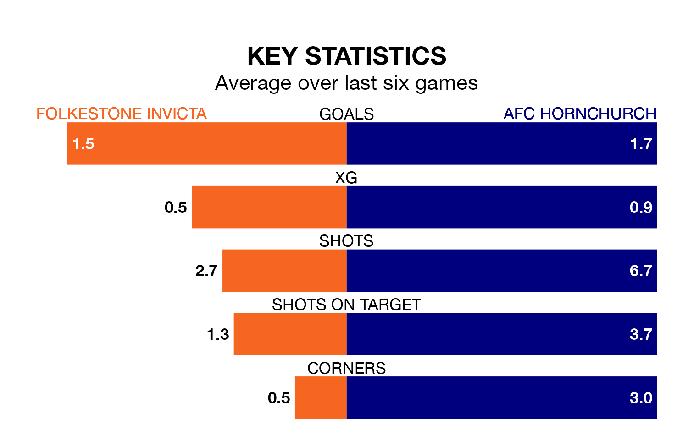

AFC Hornchurch are strong favourites to take all three points despite Folkestone Invicta's home advantage in Tuesday's late match at the Fullicks Stadium.
*Betting Company* are offering odds of 1.5 on Hornchurch sealing the win, with the visitors sitting first in Isthmian Premier Division table.
Folkestone Invicta, who are 15th in the league and 30 points behind Hornchurch, are priced at 4.5 to win. A draw is set at 4.5.
With 62 goals in 25 games so far this season, Hornchurch are the league's highest scorers with 2.5 goals per game. And they are conceding fewer than average, letting in 21 goals at a rate of 0.8 per game.
Folkestone Invicta, meanwhile, are below average scorers, with 1.4 goals per game, compared to a league average of 1.6. They have conceded 1.7 goals per game.
In the last 10 years, Folkestone Invicta and Hornchurch have played each other on 10 occasions. Folkestone Invicta won three of them, Hornchurch six, and they drew once.
On average, Folkestone Invicta scored 1.5 goals and Hornchurch 1.9 in those matches.
Their last meeting was on October 24, when Hornchurch won 4-2 at home.
The home side are in mixed form in Isthmian Premier Division, with two wins and three draws from their last six games.
With two wins and four draws over that period, the visitors' form is slightly better – they have taken 10 points from 18, compared to Folkestone Invicta's nine.
Folkestone Invicta's last match was on Saturday, a 3-3 draw against Carshalton Athletic.
Hornchurch beat Enfield Town 2-1 last time out, also on Saturday.
Updated: 13:20 (UTC), 29/01/24